Figure fig_ch04_p045_01 (Page 45) Figure fig_ch04_p045_02 (Page 45) 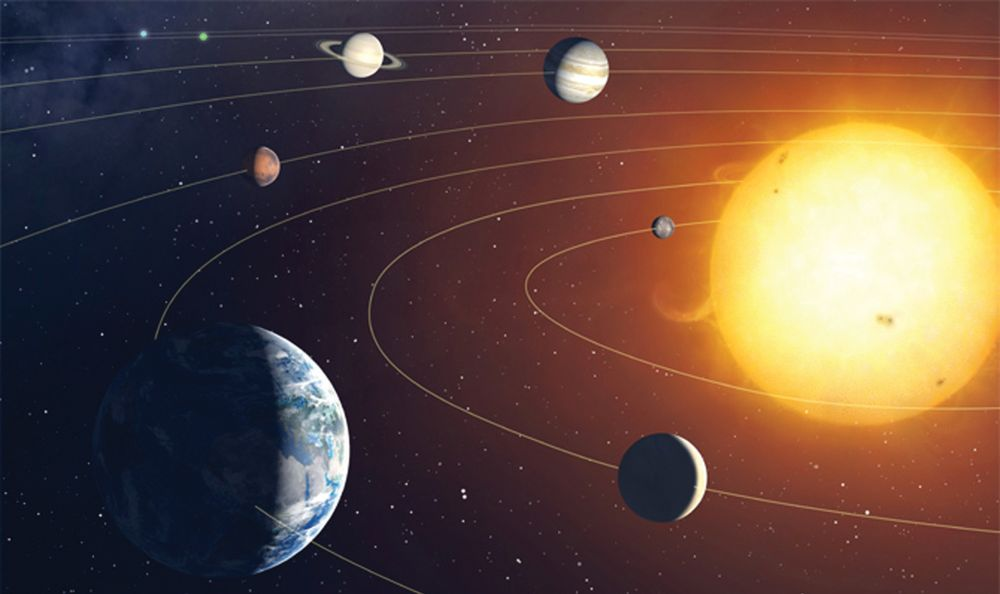
Figure fig_ch04_p045_03 (Page 45)
ഭൂമിയിലു≈ വസ്തുത്ഥളിൺ ചലിത്ഥാസ്ഥവ ഏതെ-√ാമാണ്?
ഈ ചോദ്യവുമായാണ് അന്ന് ബിμുടീണ്ണയ്യ ക്ലാസിലെസ്ഥിയ-ത്.
കെന്തിട-ത്മƒ, പാറകƒ, പയ്യവത-ത്മƒ.........
കുന്തിക-ളുടെ ഉസ്ഥര-ത്മƒ നീ≠ുപോയി. ഇവയെ√ാം നിത്യവും അതിവേഗം ചലിത്ഥുന്നു-≠െന്ന് ടീണ്ണയ്യ പറ-™-∏ോƒ
കുന്തികƒത്ഥ് അദ്ഭുത-മായി.
""ബ്ലെടാ ... അ∏ോƒ നാം സ്കൂƒ വിന്ത് വീന്തിലെസ്ഥുബ്ബോഴേത്ഥും വീട് അവിടെ കാണി-√√ോ?'' അശ്വതിയുടെ പ്രതികരണ-മാണിത്. നിത്മƒ ഇതിനോട് യോജിത്ഥുന്നു≠ോ?
ചിത്രം നോത്ഥൂ.
Figure fig_ch04_p046_01 (Page 46) Figure fig_ch04_p046_02 (Page 46) Figure fig_ch04_p046_03 (Page 46) Figure fig_ch04_p046_04 (Page 46) Figure fig_ch04_p046_05 (Page 46) Figure fig_ch04_p046_06 (Page 46)
അടി-ÿാന-ശാസ്ത്രം ˛ ഢക
എ√ാ ഗ്രഹത്മളും സൂര്യനു ചു‰ും ചലിത്ഥുന്നു≠െന്ന് അറിയാമ√ോ. ടീണ്ണയ്യ പറ-™കാര്യസ്ഥെ ഗ്രഹത്മളുടെ ചലനം അടി-ÿാന-മാത്ഥി വിശദീക-രിത്ഥാ≥ കഴിയുമോ? താഴെകൊടുസ്ഥ സൂചന-കƒ അടി-ÿാന-മാത്ഥി ചയ്യണ്ണചെøൂ.
$
$
$
ഭൂമിയുടെ ഏതെ√ാം ചലന-ത്മƒ നിത്മƒത്ഥറിയാം?
ഭൂമി ചലിത്ഥുബ്ബോƒ അതോടൊ∏ം എഗ്ലെ√ാം ചലിത്ഥും?
നിത്മƒത്ഥ് ഒരു നിമിഷ-മെന്നിലും ചലിത്ഥാതിരിത്ഥാ≥ കഴിയുമോ?
ഭൂമിയിലു≈ എ√ാ വസ്തുത്ഥളും ഭൂമിയോടൊ∏ം ചലിത്ഥുന്നു-≠്. ബഹിരാകാശ-സ്ഥുനിന്ന്
നോത്ഥിയാലേ ഈ ചലനം നമുത്ഥു തിരിണ്ണറിയാനാവൂ.
എഗ്ലൊരു വേഗം!
ഭൂമി സ്വയം തിരിയുന്നത് ഭൂമധ്യരേഖാ പ്രദേശസ്ഥ് മണിത്ഥൂറിൺ ഏകദേശം 1667 സാ
വേഗസ്ഥിലാണ്. സൂര്യനെ ചു‰ുന്നതാവന്തെ, മണിത്ഥൂറിൺ ഏതാ≠് 1,06,000 സാ വേഗസ്ഥിലും.
ഒരിടസ്ഥ് ഇരിത്ഥുബ്ബോƒ പോലും നാം എത്ര വേഗം ചലിത്ഥുന്നു!
കഠ@ടരവീഹ ഋറൗയൗിൗേ വിൺ ടരവീഹ ഞലീൗൃരല എലെ പ്രപഞ്ചസ്ഥിലെ
എ√ാ വസ്തുത്ഥളും ചലിത്ഥുന്നു എന്ന ഭാഗം കാണുമ-√ോ.
ചലനം ശരീര-സ്ഥിനു-≈ിലും
സുഹൃസ്ഥി‚െ നെഞ്ചിനോട് നിത്മളുടെ ചെവി ചേയ്യസ്ഥു
വണ്ണുനോത്ഥൂ. എഗ്ലാണ് അനുഭ-വ-∏െടുന്നത്? നിത്മƒ
കേƒത്ഥുന്ന ശബ്ദസ്ഥി‚െ കാരണ-മെഗ്ലാണ്? നിത്മളുടെ
ശരീര-സ്ഥിന-കസ്ഥ് എഗ്ലെ√ാം ചലന-ത്മƒ നടത്ഥുന്നു≠്?
$
$
$
ര‡-പര്യയനം
ചലനം നമുത്ഥു ചു‰ും
ഒരു പേ∏-റെടുസ്ഥ് വീശൂ. വായുവി‚െ ചലനം
അനുഭ-വ-∏െടുന്നി√േ?
വായുവി‚െ ചലനം തിരിണ്ണറി-™ മ‰ു സμയ്യഭത്മƒ ഏതെ-√ാമാണ്?
$
$
$
46
കടൺസ്ഥീരസ്ഥ് ഇരിത്ഥുബ്ബോƒ
Figure fig_ch04_p047_01 (Page 47) Figure fig_ch04_p047_02 (Page 47) 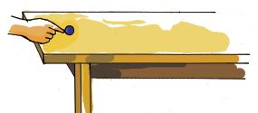
Figure fig_ch04_p047_03 (Page 47) 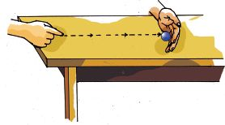
Figure fig_ch04_p047_04 (Page 47) 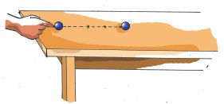
Figure fig_ch04_p047_05 (Page 47) 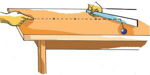
Figure fig_ch04_p047_06 (Page 47)
അടി-ÿാന-ശാസ്ത്രം ˛ ഢക
ഇനിയും എഗ്ലെ√ാം ചലന-ത്മƒ നിത്മƒത്ഥ് ചു‰ും സംഭവിത്ഥുന്നു≠്? പന്തിക-യാത്ഥൂ.
$
$
നമുത്ഥു ചു‰ും ഒന്തേറെ ചലന-ത്മƒ എ∏ോഴും സംഭവിണ്ണുകൊ≠ിരിത്ഥുന്നു എന്ന് മന- ഇലായി√േ.
ബലവും ചലനവും
ഒരു വസ്തു എ∏ോഴാണ് ചലിത്ഥാ≥ തുടത്മുന്നത്? വേഗസ്ഥിലു-≈തും സാവധാന-സ്ഥിലു≈-തുമായ പലതരം ചലന-ത്മƒ നിത്മƒ ക≠ിന്തി-√േ. എഗ്ലാണ് ഈ വ്യത്യാസ-ത്മƒത്ഥു
കാരണം?
താഴെ പറ-യുന്ന പ്രവയ്യസ്ഥന-ത്മƒ ചെøൂ.
1.
ഡെസ്ത്ഥി‚െ ഒര-‰സ്ഥ് ഗോലി വണ്ണ് വിരൺ
കൊ≠് തന്തുക.
2.
ഗോലി ഡെസ്ത്ഥിലൂടെ പതുത്ഥെ ഉരുന്തി വിടുക.
അതി‚െ പാത തട- -∏െടുസ്ഥി നിത്മളുടെ
കൈവയ്ത്ഥുക.
3.
ഗോലി ഡെസ്ത്ഥിലൂടെ സാമാന്യം വേഗസ്ഥിൺ ഉരുന്തുക.
അതി‚െ പാതയിൺ ഒരു സ്കെയിൺ അൺ∏ം ചരിണ്ണു
പിടിത്ഥുക.
4.
ഗോലി ഡെസ്ത്ഥിലൂടെ പതുത്ഥെ ഉരുന്തി വിടുക.
അതേ ദിശയിൺ മ‰ൊരു ഗോലി കൂടുതൺ
വേഗസ്ഥിൺ ഉരുന്തി ആദ്യസ്ഥേതുമായി കൂന്തിമുന്തിത്ഥുക.
$
$
$
$
നി›-ലമായ ഗോലി ചലിത്ഥാ≥ തുടത്മിയത് എ∏ോഴാണ്?
ചലിത്ഥുന്ന ഗോലി നി›-ലമായത് എ∏ോഴാണ്?
ചലിത്ഥുന്ന ഗോലിയുടെ ദിശ- മാറിയത് എ∏ോ-ƒ?
ഉരുന്തിവിന്ത ഗോലിയുടെ ചലന-വേഗം കൂടിയത് എ∏ോഴാണ്?
47
Figure fig_ch04_p048_01 (Page 48) Figure fig_ch04_p048_02 (Page 48) 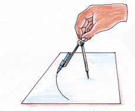
Figure fig_ch04_p048_03 (Page 48) 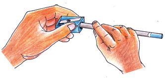
Figure fig_ch04_p048_04 (Page 48) Figure fig_ch04_p048_05 (Page 48) Figure fig_ch04_p048_06 (Page 48) Figure fig_ch04_p048_07 (Page 48) Figure fig_ch04_p048_08 (Page 48)
അടി-ÿാന-ശാസ്ത്രം ˛ ഢക
ഓരോ സμയ്യഭസ്ഥിലും ബലസ്ഥി‚െ പ്രയോഗം ചലന-സ്ഥിൺ വരുസ്ഥിയ മാ‰-ത്മƒ എഗ്ലെ√ാമാണ്? ശാസ്ത്രപുസ്തക-സ്ഥിൺ എഴുതൂ.
$
$
$
$
നി›-ലമായിരുന്ന ഗോലി ചലിണ്ണു.
പഗ്ലു കളിത്ഥുന്നവരും കളി കാണുന്നവ-രുമാണ√ോ നാം.
കളിത്ഥായ്യ എഗ്ലെ√ാം ആവശ്യത്മƒത്ഥാണ് പഗ്ലിൺ ബലം
പ്രയോഗിത്ഥുന്നത്?
$
$
$
$
നി›-ലമായ പഗ്ലിനെ ചലി-∏ിത്ഥാ≥.
ബലവും ചലനവും (എീൃരല മിറ ങീശേീി)
നി›-ലാവ-ÿ-യിലു≈ വസ്തുത്ഥƒ ബലം പ്രയോഗിണ്ണ് ചലി-∏ിത്ഥാം. ചലിത്ഥുന്ന വസ്തുത്ഥളെ നി›-ലമാത്ഥാനും ബലം പ്രയോഗിത്ഥുന്നതിലൂടെ സാധിത്ഥു-ം. ചലന-സ്ഥി‚െ ദിശ,
മാ‰ാനും ചലനവേഗം കൂന്തുക-യോ കുറയ്ത്ഥുകയോ ചെøാനും ബലം പ്രയോഗിത്ഥണം.
കഠ@ടരവീഹ ഋറൗയൗിൗേ വിൺ ടരവീഹ ഞലീൗൃരല എലെ
ബലവും ചലനവും എന്ന ഭാഗം കാണുമ-√ോ.
ചലനം പലവിധം
ഈ പ്രവയ്യസ്ഥന-ത്മƒ ചെയ്തുനോത്ഥൂ.
$
$
$
48
ഷായ്യപ്നയ്യ കൊ≠് പെ≥സിൺ കൂയ്യ∏ിത്ഥുക.
പെ≥സിൺ കോബ്ബസിൺ ഘടി-∏ിണ്ണ് വൃസ്ഥം വരയ്ത്ഥുക.
പെ≥സിൺ സ്കെയിലിനോട് ചേയ്യസ്ഥു വണ്ണ് ഒരു നേയ്യരേഖ വരയ്ത്ഥുക.
Figure fig_ch04_p049_01 (Page 49) Figure fig_ch04_p049_02 (Page 49) 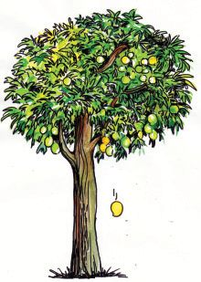
Figure fig_ch04_p049_03 (Page 49) 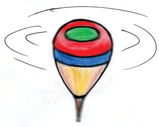
Figure fig_ch04_p049_04 (Page 49) 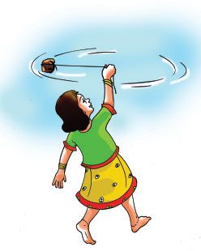
Figure fig_ch04_p049_05 (Page 49) Figure fig_ch04_p049_06 (Page 49) 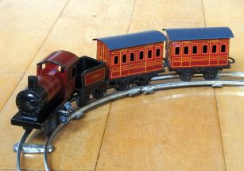
Figure fig_ch04_p049_07 (Page 49) Figure fig_ch04_p049_08 (Page 49)
അടി-ÿാന-ശാസ്ത്രം ˛ ഢക
ഓരോ സμയ്യഭസ്ഥിലും പെ≥സിലി‚െ ചലനം എപ്രകാര-മായിരുന്നു?
1.
2.
3.
താഴെ പറയുന്ന ചലന-ത്മƒ നോത്ഥൂ. പെ≥സിലി‚െ വിവിധ ചലന-ത്മളുമായി സമാന-തകളു-≈വ ഏതെ-√ാമാണ്?
കയറിൺ കെന്തിയ ക√്
വന്തസ്ഥിൺ കറത്ഥുന്നു.
വാഹന-ത്മളുടെ
ചക്രം കറത്മുന്നു.
പബ്ബരം
കറത്മുന്നു.
മാബ്ബഴം
ഞെന്ത‰് വീഴുന്നു.
ലിഫ്‰് ഉയരുന്നു.
വൃസ്ഥ പാതയിലൂടെ
കളിസ്ഥീവ≠ി ഓടുന്നു.
സമാനസ്വഭാവ-മു-≈-വയെ കൂന്തത്മളാത്ഥൂ. ഓരോ വിഭാഗ-സ്ഥിലും കൂടുതൺ ഉദാഹ-രണ-ത്മƒ
കൂന്തിണ്ണേയ്യസ്ഥ് ശാസ്ത്രപുസ്തക-സ്ഥിൺ എഴുതൂ.
ഷായ്യപ്നയ്യ ഉപയോഗിണ്ണ്
കോബ്ബസിൺ പെ≥സിൺ
സ്കെയിലും പെ≥സിലും
പെ≥സിൺ കൂയ്യ∏ിത്ഥുന്ന- ഘടി-∏ിണ്ണ് വൃസ്ഥം വരയ്ത്ഥു- ഉപയോഗിണ്ണ് നേയ്യരേഖ വരയ്
തിനോട് സാദൃശ്യമു-≈വ ന്നതിനോട് സാദൃശ്യമു-≈വ ത്ഥുന്നതിനോട് സാദൃശ്യമു≈വ
$ പബ്ബരം കറത്മുന്നു.
$
$ കയറിൺ കെന്തിയ ക√് വന്ത- $ മാബ്ബഴം ഞെന്ത‰് വീഴുന്നു.
സ്ഥിൺ കറത്ഥുന്നു.
$
$
$
$
$
49
Figure fig_ch04_p050_01 (Page 50) Figure fig_ch04_p050_02 (Page 50) Figure fig_ch04_p050_03 (Page 50) Figure fig_ch04_p050_04 (Page 50) Figure fig_ch04_p050_05 (Page 50) Figure fig_ch04_p050_06 (Page 50)
അടി-ÿാന-ശാസ്ത്രം ˛ ഢക
$
$
ഓരോ കൂന്തസ്ഥിലെയും ചലന-ത്മƒത്ഥു≈ പൊതുസവിശേഷത എഗ്ലാണ്?
1
..........................................................
2.
..........................................................
3
..........................................................
ഒന്നും ര≠ും കൂന്തത്മƒ എത്മനെ വ്യത്യാസ-∏െന്തിരിത്ഥുന്നു?
ഒരു വസ്തുവി‚െ നേയ്യരേഖ-യിലൂടെയു≈ ചലന-മാണ് നേയ്യരേഖാച-ലനം (ഘശിലമൃ ആീശേീി).
സ്വഗ്ലം അക്ഷസ്ഥെ അടി-ÿാന-മാത്ഥിയു≈ ചലന-മാണ് ഭ്രമണം (ഞീമേശേീി). വൃസ്ഥാകാര
പാതയിലൂടെയു≈ ചലന-മാണ് വയ്യസ്ഥുളചലനം (ഇശൃരൗഹമൃ ആീശേീി).
ചലനം ഇത്മനെയും
താഴെ പറയുന്ന ചലന-ത്മƒ നിത്മƒ ശ്ര≤ിണ്ണിന്തു-≠ാവുമ√ോ.
$
$
$
ക്ലോത്ഥിലെ പെ≥ഡുല-സ്ഥി‚െ ചലനം
ഊ™ാലി‚െ ചലനം
തൂത്ഥിയിന്ത തൂത്ഥുവിള-ത്ഥി‚െ ചലനം
ഈ ചലന-ത്മളുടെ സവിശേഷ-തകƒ എഗ്ലെ-√ാമാണ്?
ഇസ്ഥര-സ്ഥിലു≈ മ‰ു ചലന-ത്മƒ ക≠െസ്ഥാമോ?
വസ്തു ഒരു തുലന-ÿാനസ്ഥെ ആസ്പദ-മാത്ഥി ഇരുവ-ശത്മളിലേത്ഥും ചലിത്ഥുന്നതാണ്
ദോലനം (ഛരെശഹഹമശേീി).
വാഹന-ത്മളിലെ
വൈ∏-റി‚െ ചലനം
ദോലന-മാണോ?
ഹസീ- ബ ഇ‚െ സംശ- യ - ഏസ്ഥാട് നിത്മ- ള ഉടെ
പ്രതിക-രണ-മെഗ്ലാണ്?
താഴെ കൊടുസ്ഥ സൂചന-കƒ ഉപയോഗ-∏െടുസ്ഥി ചയ്യണ്ണചെøൂ.
$
$
50
ഒരു തുലന-ÿാനസ്ഥെ ആസ്പദ-മാത്ഥിയാണോ ചലിത്ഥുന്നത്?
ഇരുവ-ശസ്ഥേത്ഥും ചലിത്ഥുന്നു≠ോ?
Figure fig_ch04_p051_01 (Page 51) Figure fig_ch04_p051_02 (Page 51) Figure fig_ch04_p051_03 (Page 51) 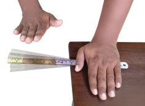
Figure fig_ch04_p051_04 (Page 51) 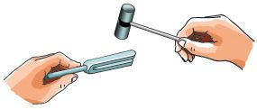
Figure fig_ch04_p051_05 (Page 51) 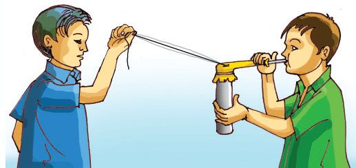
Figure fig_ch04_p051_06 (Page 51) Figure fig_ch04_p051_07 (Page 51) Figure fig_ch04_p051_08 (Page 51)
അടി-ÿാന-ശാസ്ത്രം ˛ ഢക
ദോലനം ഇത്മനെയും
താഴെ- പറ-യുന്ന പ്രവയ്യസ്ഥന-ത്മƒ ചെയ്തുനോത്ഥൂ.
$
ട്യൂണിങ് ഫോയ്യത്ഥി‚െ ഒരു ഭുജസ്ഥിൺ റ∫യ്യ ഹാമയ്യ കൊ≠്
അടിത്ഥുക.
$
വലിണ്ണു പിടിണ്ണ റ∫യ്യബാ‚ിൺ വിരൺകൊ≠് തന്തുക.
$
മെ‰ൺ സ്കെയിലി‚െ അഗ്രഭാഗം പുറസ്ഥേത്ഥു ത≈ിനിൺത്ഥസ്ഥത്ഥ രീതിയിൺ മേശ-∏ുറസ്ഥു വണ്ണ് ത≈ിനിൺത്ഥുന്ന ഭാഗസ്ഥ്
വിരൺകൊ≠് തന്തുക.
ഇ∏ോഴു-≠ായ ദോലനചലന-ത്മƒത്ഥ് വേഗം കൂടുത-ല√േ?
ദ്രുതഗ-തിയിലു≈ ദോലന-ത്മളെ കബ്ബനം (ഢശയൃമശേീി) എന്ന് പറയാറു-≠്.
കഠ@ടരവീഹ ഋറൗയൗിൗേ വിൺ ടരവീഹ ഞലീൗൃരല എലെ
വിവിധ-തരം ചലന-ത്മƒ എന്ന ഭാഗം കാണുമ-√ോ.
കബ്ബനം കാണാം
കബ്ബനം വ്യ‡-മായി കാണാ≥ സഹായിത്ഥുന്ന ഒരു പീ∏ി നമുത്ഥു-≠ാത്ഥാം.
ആവശ്യമായ സാമഗ്രികƒ:
ഒരു ഇഞ്ച് വ്യാസമു≈ പൈ∏് 10 രാ നീളസ്ഥിൺ, ബലൂച്ച, പേനയുടെ ഒഴി™ കൂട്, റ∫യ്യ
ബാ‚ ്, നൂൺ ˛ 2 ആ, സെ√ോടേ∏്.
നിയ്യമാണ-രീതി:
ബലൂണി‚െ അടിഭാഗം മുറിണ്ണുമാ‰ുക.
മുറിണ്ണ അ‰സ്ഥ് പൈ∏ും മ‰േ അ‰സ്ഥ് പേനയുടെ കൂടും കടസ്ഥിവണ്ണ് റ∫യ്യബാ‚ുപ-യോഗിണ്ണ് കെന്തിയുറ-∏ിത്ഥുക. പൈ∏് കുസ്ഥനെ
പിടിണ്ണ് പേനയുടെ കൂട് തിര-›ീന ദിശയിൺ
വലിണ്ണു പിടിത്ഥുക. അ∏ോƒ പൈ∏ിന് മുകളിൺ ബലൂച്ച ഒരു സ്തരം പോലെ വലി-™ുനിൺത്ഥും. ഈ സ്തരസ്ഥി‚െ മധ്യഭാഗസ്ഥ് നൂലി‚െ ഒരഗ്രം സെ√ോടേ∏് ഉപയോഗിണ്ണ് ഉറ∏ിത്ഥുക. പീ∏ി തയായ്യ.
പ്രവയ്യസ്ഥി-∏ിത്ഥുന്ന വിധം:
നൂലി‚െ സ്വതഗ്ല്രാഗ്രം കൂന്തുകാര≥ പതുത്ഥെ വലിണ്ണു പിടിത്ഥന്തെ. ഇനി പേനയുടെ കൂട്
വലിണ്ണു പിടിണ്ണ് അതിലൂടെ ഊതിനോത്ഥൂ. ആനയുടെ ചിന്നംവിളി പോലു≈ ശബ്ദം കേƒത്ഥുന്നി-√േ? അതോടൊ∏ം നൂലി‚െ ചലനം ശ്ര≤ിണ്ണോ? ഇത് ഏതുതരം ചലന-മാണ്?
51
Figure fig_ch04_p052_01 (Page 52) Figure fig_ch04_p052_02 (Page 52) 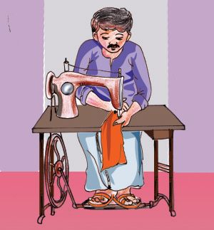
Figure fig_ch04_p052_03 (Page 52) Figure fig_ch04_p052_04 (Page 52) 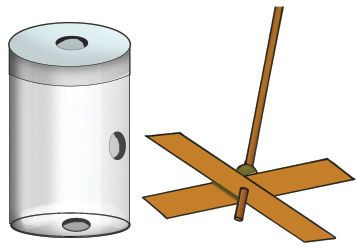
Figure fig_ch04_p052_05 (Page 52)
അടി-ÿാന-ശാസ്ത്രം ˛ ഢക
ചലനം പ്രയോഗ-സ്ഥിൺ
തøൺ മെഷീ≥ ഉപയോഗിണ്ണ് വസ്ത്രത്മƒ തയ്ത്ഥുന്നത് നിരീക്ഷിത്ഥൂ. നിത്മƒ പഠിണ്ണ ഏതെ√ാം ഇനം ചലന-ത്മƒ തøൺ
മെഷീനിൺ കാണാ≥ കഴിയും?
$
$
താഴെ- കൊടുസ്ഥ ഉപക-രണ-ത്മളുടെ ചലന-രീതി, പ്രയോജനം
എന്നിവ കൂന്തിണ്ണേയ്യസ്ഥ് പന്തിക പൂയ്യസ്ഥിയാത്ഥൂ.
ചലിത്ഥുന്ന വസ്തു
ചെ≠-യുടെ ഡയഫ്രം
കറത്മുന്ന കസേര
ക്ലോത്ഥിലെ സൂചിയുടെ അഗ്രഭാഗം
തøൺമെഷീനിലെ ചെറിയ ചക്രം
ലിഫ്‰്
ഊ™ാൺ
വീണയിലെ കബ്ബി
പൊടിമി-√ിലെ ചക്രത്മƒ
ചലനരീതി
ദോലനം
പ്രയോജനം
ശബ്ദമു-≠ാത്ഥുന്നു
പന്തിക പൂയ്യസ്ഥിയാത്ഥിയ√ോ. ഇതിൺ നിന്നു നിത്മƒത്ഥ് എഗ്ലു നിഗമ-നം രൂപ-∏െടുസ്ഥാ≥
കഴിയും? ശാസ്ത്രപുസ്തക-സ്ഥിൺ എഴുതൂ.
കഠ@ടരവീഹ ഋറൗയൗിൗേ വിൺ ടരവീഹ ഞലീൗൃരല എലെ
ചലനം പ്രയോഗ-സ്ഥിൺ എന്ന ഭാഗം കാണുമ-√ോ.
കളി-∏-ന്നയു≠ാത്ഥാം
ആവശ്യമായ സാമഗ്രികƒ:
ചെറിയ πാല്ലിക് ബോന്തിൺ, ഈയ്യത്ഥിൺ, നൂൺ, കായ്യഡ്ബോഡ് കഷണം, മുസ്ഥ്, പശ.
നിയ്യമാണഘന്തത്മƒ:
$
$
$
52
ബോന്തിലി‚െ അട-∏ിലും അടിഭാഗസ്ഥും പായ്യശ്വഭാഗസ്ഥും ഓരോ സുഷിര-മു-≠ാത്ഥുക.
കായ്യഡ് ബോഡിൺനിന്ന് ഒരു പന്നയുടെ ദളത്മƒ
വെന്തിയെടുത്ഥുക.
ഈയ്യത്ഥിലി‚െ മുകള‰സ്ഥ് മുസ്ഥ് കോയ്യസ്ഥു വണ്ണ്
പന്നയുടെ ദളത്മƒ മുസ്ഥിനു -മുക-ളിൺ പശയിന്ത് ഉറ-∏ിത്ഥുക. ഈയ്യത്ഥിലി‚െ മധ്യഭാഗസ്ഥ് നൂൺ കെന്തുക.
Figure fig_ch04_p053_01 (Page 53) Figure fig_ch04_p053_02 (Page 53) 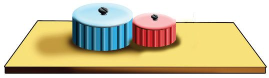
Figure fig_ch04_p053_03 (Page 53) 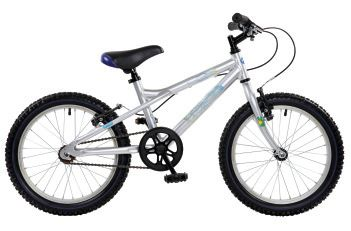
Figure fig_ch04_p053_04 (Page 53) Figure fig_ch04_p053_05 (Page 53) 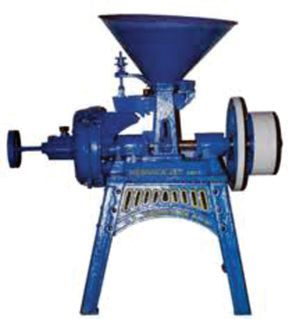
Figure fig_ch04_p053_06 (Page 53) 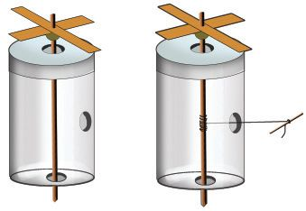
Figure fig_ch04_p053_07 (Page 53)
അടി-ÿാന-ശാസ്ത്രം ˛ ഢക
$
$
സ്വതഗ്ല്രമായി തിരിയ-സ്ഥത്ഥ വിധം ബോന്തിലി‚െ അട∏ിലും താഴെയുമു≈ സുഷിര-ത്മളിലൂടെ ഈയ്യത്ഥിൺ
കടസ്ഥിവയ്ത്ഥുക.
നൂലി‚െ സ്വതഗ്ല്രാഗ്രം ബോന്തിലി‚െ പായ്യശ്വഭാഗസ്ഥെ
സുഷിര-സ്ഥിലൂടെ പുറസ്ഥെടുത്ഥുക. നൂലി‚െ അ‰സ്ഥ്
ഒരു ഈയ്യത്ഥിൺ കഷണം കെന്തിവ-യ്ത്ഥുക.
പന്ന കറത്ഥാം
ഈയ്യത്ഥിൺ തിരിണ്ണുകൊ≠് നൂൺ മുഴുവ≥ അതിൺ ചു‰ിയെടുത്ഥുക. നൂലി‚െ സ്വതഗ്ല്രാഗ്രം
വലിണ്ണുനോത്ഥൂ. കളി-∏ന്ന കറത്മുന്നി√േ?
$ നൂലിലു-≠ായ ചലനം പന്നയുടെ ചിറകിലെസ്ഥിയത് എത്മനെയാണ്?
$ ഒരിടസ്ഥു നൺകുന്ന ബലം മ‰ൊരിടസ്ഥ് എസ്ഥിണ്ണ്
ചലി-∏ിത്ഥുന്ന എഗ്ലെ√ാം ഉപക-രണ-ത്മƒ നിത്മƒ
ക≠ിന്തു≠്?
$ ഇതിനായി എഗ്ലെ√ാം സംവിധാന-ത്മƒ ഇവയിൺ
ഉപയോഗ-∏െടുസ്ഥുന്നു≠്?
$ സൈത്ഥിƒ ചവിന്തുബ്ബോƒ നാം എവിടെയാണ് ബലം പ്രയോഗിത്ഥുന്നത്?
$ ഈ ബലം ചക്രസ്ഥിലെസ്ഥുന്നത് എത്മനെയാണ്?
$ ഏതു- ഭാഗം ചലിത്ഥുബ്ബോഴാണ് പൊടിമി-√ിൺ പ്രവയ്യസ്ഥനം
ആരംഭിത്ഥുന്നത്?
$ ഈ കറത്ഥം മ‰ു യഗ്ല്രഭാഗത്മളിലേത്ഥ് എസ്ഥിത്ഥുന്നത്
എത്മനെയാണ്?
$ തøൺയഗ്ല്രസ്ഥി‚െ പെഡലിൺ നൺകുന്ന ബലം സൂചിയിൺ
എസ്ഥിത്ഥാ≥ എഗ്ലെ√ാം സംവിധാന-ത്മƒ ഉപയോഗിത്ഥുന്നു?
ക≠െസ്ഥലുകƒ ശാസ്ത്രപുസ്തക-സ്ഥിൺ ചേയ്യത്ഥൂ.
ഒരു യഗ്ല്രസ്ഥിൺ നൺകുന്ന ബലസ്ഥെ മ‰ു- യഗ്ല്രത്മളിലേത്ഥോ യഗ്ല്രഭാഗ-ത്മളിലേത്ഥോ
എസ്ഥിണ്ണ് അവയെത്ഥൂടി ചലി-∏ിത്ഥാ≥ സാധിത്ഥും. ചെയി≥, ബെൺ‰്, ചക്രവും
ആക്സിലും തുടത്മിയ സംവിധാന-ത്മƒ ഇതിനായി ഉപയോഗിത്ഥുന്നു.
പൺണ്ണക്രത്മƒ
ചിത്രസ്ഥിൺ കാണിണ്ണിരിത്ഥുന്നതുപോലെ വ്യത്യസ്ത വലു-∏-മു≈ ര≠ു πാല്ലിക് അട-∏ുകƒ ഒരു മര- ∏ - ല - ക - യ ഇൺ പര- സ ്പരം
ചേയ്യന്നുനിൺത്ഥുന്ന രീതിയിൺ ആണിയ-ടിണ്ണ്
ഉറ-∏ിത്ഥൂ. ഇനി ഓരോ അട∏ും പിടിണ്ണ്
കറത്ഥിനോത്ഥൂ. നിത്മƒ എഗ്ലു കാണുന്നു?
53
Figure fig_ch04_p054_01 (Page 54) Figure fig_ch04_p054_02 (Page 54) 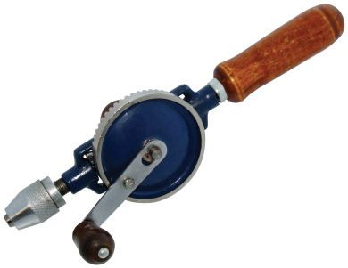
Figure fig_ch04_p054_03 (Page 54) 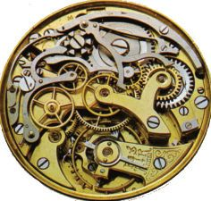
Figure fig_ch04_p054_04 (Page 54) 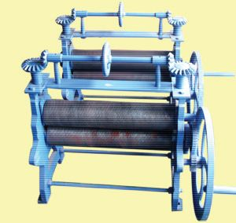
Figure fig_ch04_p054_05 (Page 54) 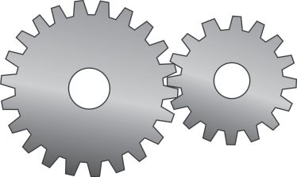
Figure fig_ch04_p054_06 (Page 54) Figure fig_ch04_p054_07 (Page 54)
അടി-ÿാന-ശാസ്ത്രം ˛ ഢക
$
ചെറിയ അട∏് ഇടസ്ഥോന്തു കറത്ഥുബ്ബോƒ വലിയ അട∏് എത്മോന്താണ് കറത്മുന്നത്?
വലസ്ഥോന്തു കറത്ഥുബ്ബോഴോ?
$
ചെറിയ അട∏് ഒരു തവണ കറത്ഥുബ്ബോƒ വലിയ അട∏് ഒരു കറത്ഥം പൂയ്യസ്ഥിയാത്ഥുന്നു≠ോ?
$
വലിയ അട∏് ഒരു തവണ കറത്ഥുബ്ബോƒ ചെറിയ
അട∏് എത്രസ്ഥോളം കറത്മുന്നു≠്?
അട∏ുകളിലു≈ നേരിയ പ√ുക-ള√േ ഒന്ന് കറത്മുബ്ബോƒ മ‰േതിനെയും കറത്മാ≥ സഹായിത്ഥുന്നത്?
ഇസ്ഥരം ചക്രത്മളാണ് പൺണ്ണക്രത്മƒ (ഏലമൃ)െ.
പൺണ്ണക്രത്മƒ നിത്മƒ എവിടെയെ√ാം ക≠ിന്തു≠്?
$
$
$
കളി-∏ാന്തത്മളിൺ
ഹാ‚ ്ഡ്രിൺ, കളി-∏ാന്തത്മളിലെ പൺണ്ണക്രത്മƒ തുടത്മിയവ കറത്ഥി പ്രവയ്യസ്ഥി-∏ിണ്ണുനോത്ഥൂ.
പൺണ്ണക്രത്മƒ ചലന-സ്ഥിൺ എഗ്ലെ√ാം മാ‰-ത്മƒ വരുസ്ഥുന്നുവെന്ന് താഴെത്ഥൊടുസ്ഥ
സൂചന-കളുടെ അടി-ÿാന-സ്ഥിൺ നിരീക്ഷിണ്ണു ക≠െസ്ഥി ശാസ്ത്രപുസ്തക-സ്ഥിൺ എഴുതൂ.
$
$
ചലന-സ്ഥി‚െ ദിശയിൺ മാ‰ം വരുസ്ഥുന്നു≠ോ?
ചലനവേഗസ്ഥിൺ മാ‰ം വരുസ്ഥുന്നു≠ോ?
ഒരു യഗ്ല്രഭാഗ-സ്ഥി‚െ കറത്ഥം ഉപയോഗ-∏െടുസ്ഥി വ്യത്യസ്ത വേഗത്മളിലും ദിശക-ളിലും
ഒന്നിലേറെ യഗ്ല്രഭാഗ-ത്മƒ ചലി-∏ിത്ഥാ≥ പൺണ്ണക്രത്മƒ സഹായിത്ഥുന്നു. ചെറിയ
പൺണ്ണക്രം ഉപയോഗിണ്ണ് വലിയ പൺണ്ണക്രം കറത്ഥുബ്ബോƒ ചലന-വേഗം കുറയുന്നു. തിരിണ്ണാകുബ്ബോƒ ചലന-വേഗം കൂടുന്നു. പൺണ്ണക്രത്മƒ ഉപയോഗിണ്ണ് ചലന-സ്ഥി‚െ ദിശയും
വേഗവും മാ‰ാ≥ കഴിയുന്നു എന്ന സൗകര്യം നാം ഒന്തേറെ യഗ്ല്രത്മളിൺ പ്രയോജ-ന-∏െടുസ്ഥുന്നു.
കഠ@ടരവീഹ ഋറൗയൗിൗേ വിൺ ടരവീഹ ഞലീൗൃരല എലെ
ചലനം യഗ്ല്രത്മളിൺ എന്ന ഭാഗം കാണുമ-√ോ.
54
Figure fig_ch04_p055_01 (Page 55) Figure fig_ch04_p055_02 (Page 55) Figure fig_ch04_p055_03 (Page 55) Figure fig_ch04_p055_04 (Page 55)
അടി-ÿാന-ശാസ്ത്രം ˛ ഢക
$
$
$
$
$
1.
2.
3.
ഭൂമിയിലു≈ എ√ാ വസ്തുത്ഥളും ചലന-സ്ഥിനു വിധേയ-മാണ് എന്ന് തിരിണ്ണറി™്
വിശദീക-രിത്ഥാ≥ കഴിയുന്നു.
വസ്തുത്ഥളുടെ ചലനാവ-ÿ-യിലും നി›-ലാവ-ÿ-യിലും ബലം ഉ≠ാത്ഥുന്ന മാ‰ത്മƒ തിരിണ്ണറി™ു വിശദീക-രിത്ഥാ≥ കഴിയുന്നു.
ചലന-ത്മളെ സവിശേഷ-തക-ളുടെ അടി-ÿാന-സ്ഥിൺ തരംതിരിണ്ണ് ഉദാഹ-രണ-ത്മƒ
നൺകാ≥ കഴിയുന്നു.
വിവിധ-യിനം ചലന-ത്മƒ വ്യത്യസ്ത ഉപക-രണ-ത്മളിൺ എത്മനെയെ√ാം ഉപയോഗ∏െടുസ്ഥുന്നുവെന്ന് വിശദീക-രിണ്ണ് ഉദാഹ-രണ-ത്മƒ നൺകാ≥ കഴിയുന്നു.
ചലന-വുമായി ബ'-∏െന്ത ഉപക-രണത്മƒ നിയ്യമിത്ഥാ≥ കഴിയുന്നു.
കൈവ≠ി വലിത്ഥാര≥ വ≠ിയിൺ താഴെ-∏-റയുന്ന സμയ്യഭത്മളിൺ എഗ്ലിനുവേ-≠ിയാണ് ബലം പ്രയോഗിത്ഥുന്നത്?
ശ.
കൈവ≠ി വലിണ്ണു തുടത്മുബ്ബോƒ.
ശശ.
വ≠ി ഇറത്ഥസ്ഥിലെസ്ഥുബ്ബോƒ.
ബലം ചലന-സ്ഥിൺ മ‰െഗ്ലെ√ാം മാ‰-ത്മƒ വരുസ്ഥുന്നു≠്?
താഴെ പറ-യുന്ന സμയ്യഭത്മളിൺ പ്രസ-‡-മാകുന്നത് ഏതിനം ചലന-മാണ്?
ശ.
റച്ചവേയിലൂടെ ചീറി-∏ായുന്ന വിമാനം.
ശശ. കറത്മുന്ന സൈത്ഥിƒചക്രസ്ഥിലെ വാൺവ്ട്യൂബി‚െ ചലനം.
മ‰ിനം ചലന-ത്മƒത്ഥും ഓരോ ഉദാഹ-രണ-ം ക≠െസ്ഥുക.
ലതിക, ഇഖ്ബാൺ, സോനു എന്നിവയ്യ ദോലനചലനസ്ഥെ പന്തിക-∏െടുസ്ഥിയ-താണിത്.
ലതിക
ഇഖ്ബാൺ
സോനു
$ ചെ≠കൊന്തുബ്ബോƒ $ ചെ≠കൊന്തുബ്ബോƒ
$ എയ്തുവിന്ത അബ്ബി‚െ ചലനം.
തുകലി‚െ ചലനം.
തുകലി‚െ ചലനം.
$ ആന്തുക-ന്തിലി‚െ
$ മീന്തുബ്ബോƒ വീണത്ഥബ്ബിയുടെ $ ഉസ്ഥേജി-∏ിണ്ണ ട്യൂണിങ് ഫോയ്യ
ചലനം.
ചലനം.
ത്ഥി‚െ ഭുജത്മളുടെ ചലനം.
$ ജയ‚ ് വീലി‚െ
$ ഉസ്ഥേജി-∏ിണ്ണ ട്യൂണിങ് ഫോയ്യ $ വലിണ്ണുകെന്തിയ കബ്ബിയിൺ
ചലനം.
ത്ഥി‚െ ഭുജത്മളുടെ ചലനം.
തന്തുബ്ബോഴു-≠ാകുന്ന ചലനം.
ശ.
ശശ.
ശശശ.
ആരുടെ ക≠െസ്ഥലാണ് ശരി?
ദോലനചലന-സ്ഥിൺ∏െടാസ്ഥവ ഏതെ√ാം?
കബ്ബനവും ദോലനവും എത്മനെ വ്യത്യാസ-∏െന്തിരിത്ഥുന്നു?
55
Figure fig_ch04_p056_01 (Page 56) Figure fig_ch04_p056_02 (Page 56) Figure fig_ch04_p056_03 (Page 56) Figure fig_ch04_p056_04 (Page 56)
അടി-ÿാന-ശാസ്ത്രം ˛ ഢക
4.
പൺണ്ണക്രത്മളുടെ ഈ ക്രമീക-രണം നോത്ഥൂ.
5.
ശ.
ഒന്നാമസ്ഥെ പൺണ്ണക്രം
കറത്ഥുബ്ബോƒ അതേ
ദിശയിൺ കറത്മുന്ന
പൺണ്ണക്രം ഏതായിരിത്ഥും?
ശശ.
ഏ‰വും വേഗം കുറവ്
ഏതു പൺണ്ണക്രസ്ഥിനായിരിത്ഥും?
1
2
3
4
താഴെ -കൊടുസ്ഥ ആശയചിത്രീക-രണം പൂയ്യസ്ഥിയാത്ഥൂ.
ചലനം
വിവിധ-തരം ചലന-ത്മളും ഉപയോഗിത്ഥുന്ന ഉപക-രണ-ത്മളും
ചലന-സ്ഥി‚െ മാ‰ം സാധ്യമാത്ഥുന്ന
ഉപക-രണ-ത്മളും അവയുടെ
ഉപയോഗ-ത്മളും
ദോലനം ˛ പെ≥ഡുലം, ഊ™ാൺ,
ആന്തുക-ന്തിൺ, വീണത്ഥബ്ബി
പൺണ്ണക്രം ˛ ചലന-സ്ഥി‚െ ദിശ, വേഗം
എന്നിവ മാ‰ാ≥
ചലിത്ഥുന്ന വസ്തുവി‚െ ദിശ മാ‰ുന്നു.
ബലം ചലനാവ-ÿ-യിൺ വരുസ്ഥുന്ന
മാ‰-ത്മƒ
1.
2.
3.
56
ഏകദേശം 25 രാ നീളമു≈ ഒരു പി.വി.-സി. പൈ∏ിനു-≈ിലൂടെ 50 രാ നീളമു≈
ചരട് കോയ്യസ്ഥെടുത്ഥുക. ചരടി‚െ മുകള-‰സ്ഥ് ഒരു ഇരുബ്ബു നന്തും താഴെ അ‰സ്ഥ്
വെ≈ം നിറണ്ണ ഒരു കു∏ിയും കെന്തുക. പൈ∏ിൺ മുറുകെ∏ിടിണ്ണുകൊ≠് നന്ത് വന്തസ്ഥിൺ ചുഴ-‰ുക. നന്ത്, ചരട്, കു∏ി എന്നിവ-യിൺ ഏതെ√ാം ചലന-ത്മƒ നിത്മƒത്ഥ്
കാണാ≥ കഴിയുന്നു?
ഏതെന്നിലും ഒരു ശാസ്ത്ര-˛സാന്നേതിക മ്യൂസിയ-സ്ഥിലേത്ഥ് പഠന-യാത്ര നടസ്ഥുക.
ചലന-വുമായി ബ'-∏െന്ത് അവിടെയു≈ വിവിധ പ്രവയ്യസ്ഥന-ത്മƒ ചെയ്തു നോത്ഥൂ.
കേടുവന്ന കളി-∏ാന്തത്മƒ, ക്ലോത്ഥ് മുതലായവ അഴിണ്ണുനോത്ഥൂ. വിവിധ ചലന-ത്മƒത്ഥ്
സഹായ-കമായ എഗ്ലെ√ാം സംവിധാന-ത്മƒ അവയിലു-≠െന്ന് പരിശോധിത്ഥൂ.